Мануал: модули 1–3
Полное практическое руководство. Модуль 1 — базовая настройка машин и сети (адресация, SSH, маршрутизаторы ISP/HQ-RTR/BR-RTR, GRE+IPSec, OSPF, DHCP, DNS). Модули 2–3 — сервисы инфраструктуры: RAID, NFS, время, домен Samba, проброс портов (NAT), Ansible, Moodle, Zabbix, CUPS и Docker/MediaWiki.
Модуль 1
Создание машин
Создаем виртуальные машины:
CLI HQ-CLI HQ-SRV BR-SRV
На HQ-SRV и BR-SRV НЕ включаем автоконфигурацию сети.
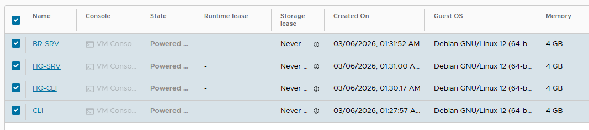
Настройка CLI
hostname ClI
Сеть:
nano /etc/network/interfaces auto lo iface lo inet loopback auto ens192 iface ens192 inet static address 172.16.6.1 netmask 255.255.255.240 gateway 172.16.6.14 DNS: nano /etc/resolv.conf nameserver 8.8.8.8
Перезагрузка:
reboot
Настройка HQ-CLI
hostname HQ-CLI
Сеть:
nano /etc/network/interfaces auto lo iface lo inet loopback auto ens192 iface ens192 inet static address 192.168.12.1 netmask 255.255.255.240 gateway 192.168.12.14 DNS: nano /etc/resolv.conf nameserver 8.8.8.8 reboot
Настройка BR-SRV
Обновление системы:
apt update apt install sudo openssh-server -y
Создаем пользователя:
useradd -m -u 1010 -s /bin/bash sshuser passwd sshuser
Пароль:
P@ssw0rd
Даем sudo без пароля:
visudo
Добавить в конец:
sshuser ALL=(ALL) NOPASSWD:ALL
SSH баннер
nano /etc/issue.net Authorized access only
SSH конфигурация
nano /etc/ssh/sshd_config
Изменить:
Port 2024 AllowUsers sshuser MaxAuthTries 2 Banner /etc/issue.net
Сеть
nano /etc/network/interfaces auto lo iface lo inet loopback auto ens192 iface ens192 inet static address 192.168.21.1 netmask 255.255.255.224 gateway 192.168.21.30 DNS: nano /etc/resolv.conf nameserver 8.8.8.8
Перезагрузка:
reboot
Настройка HQ-SRV
apt update apt install sudo openssh-server -y
Создаем пользователя:
useradd -m -u 1010 -s /bin/bash sshuser passwd sshuser
Пароль:
P@ssw0rd sudo: visudo sshuser ALL=(ALL) NOPASSWD:ALL SSH nano /etc/issue.net Authorized access only nano /etc/ssh/sshd_config Port 2024 AllowUsers sshuser MaxAuthTries 2 Banner /etc/issue.net
Сеть
nano /etc/network/interfaces auto lo iface lo inet loopback auto ens192 iface ens192 inet static address 192.168.11.1 netmask 255.255.255.192 gateway 192.168.11.61 DNS: nano /etc/resolv.conf nameserver 8.8.8.8 reboot
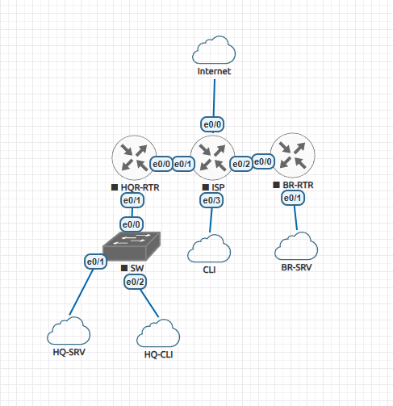
Настройка ISP
enable conf t hostname ISP int e0/0 ip address 10.101.3.1 255.255.255.0 no shutdown ip nat outside int e0/1 ip address 172.16.4.14 255.255.255.240 no shutdown ip nat inside int e0/2 ip address 172.16.5.14 255.255.255.240 no shutdown ip nat inside int e0/3 ip address 172.16.6.14 255.255.255.240 no shutdown ip nat inside
Маршрут:
ip route 0.0.0.0 0.0.0.0 10.101.3.254 NAT: access-list 1 permit any ip nat inside source list 1 interface e0/0 overload
Сохранить:
wr
HQ-RTR
enable conf t hostname HQ-RTR int e0/0 ip address 172.16.4.1 255.255.255.240 no shutdown ip nat outside int e0/1 no shutdown VLAN int e0/1.100 encapsulation dot1Q 100 ip address 192.168.11.61 255.255.255.192 ip nat inside int e0/1.200 encapsulation dot1Q 200 ip address 192.168.12.14 255.255.255.240 ip nat inside int e0/1.999 encapsulation dot1Q 999 ip address 192.168.1.6 255.255.255.248 ip nat inside NAT: access-list 1 permit any ip nat inside source list 1 interface e0/0 overload
Маршрут:
ip route 0.0.0.0 0.0.0.0 172.16.4.14 wr
BR-RTR
enable conf t hostname BR-RTR int e0/0 ip address 172.16.5.1 255.255.255.240 no shutdown ip nat outside int e0/1 ip address 192.168.21.30 255.255.255.224 no shutdown ip nat inside access-list 1 permit any ip nat inside source list 1 interface e0/0 overload ip route 0.0.0.0 0.0.0.0 172.16.5.14 wr
GRE + IPSec
HQ-RTR: conf t username net_admin privilege 15 secret P@$$word interface tunnel0 ip address 192.168.254.1 255.255.255.252 tunnel source e0/0 tunnel destination 172.16.5.1 tunnel mode gre ip ACL: ip access-list extended GRE-TRAFFIC permit gre host 172.16.4.1 host 172.16.5.1 ISAKMP: crypto isakmp policy 10 encr aes 256 hash sha512 authentication pre-share group 24 crypto isakmp key cisco123 address 172.16.5.1 IPSEC: crypto ipsec transform-set IPSEC esp-aes esp-sha-hmac mode tunnel crypto map VPN-MAP 10 ipsec-isakmp set peer 172.16.5.1 set transform-set IPSEC match address GRE-TRAFFIC int e0/0 crypto map VPN-MAP wr
OSPF
HQ-RTR router ospf 1 network 192.168.1.0 0.0.0.7 area 0 network 192.168.11.0 0.0.0.63 area 0 network 192.168.12.0 0.0.0.15 area 0 network 192.168.254.0 0.0.0.3 area 0 passive-interface default no passive-interface tunnel0 interface tunnel0 ip ospf authentication ip ospf authentication-key cisco123 BR-RTR router ospf 1 network 192.168.21.0 0.0.0.31 area 0 network 192.168.254.0 0.0.0.3 area 0 passive-interface default no passive-interface tunnel0 interface tunnel0 ip ospf authentication ip ospf authentication-key cisco123
Проверка VPN
show crypto isakmp sa show crypto ipsec sa
Проверка SSH
С HQ-CLI
ssh -p 2024 sshuser@192.168.11.1 ssh -p 2024 sshuser@192.168.21.1
DHCP
HQ-RTR conf t ip dhcp excluded-address 192.168.12.14 ip dhcp pool HQ-CLI-POOL network 192.168.12.0 255.255.255.240 default-router 192.168.12.14 dns-server 192.168.11.1 domain-name au-team.irpo
DNS на HQ-SRV
Установка:
apt install bind9 dnsutils -y nano /etc/bind/named.conf.options
Добавить:
forwarders {
8.8.8.8;
};
recursion yes;
allow-query { any; };
listen-on { any; };
Перезапуск:
systemctl restart bind9 systemctl status bind9
Проверка DNS
ping ya.ru
Модули 2–3
Настройка RAID-массива (HQ-SRV)
Добавляем 3 диска на HQ-SRv
Сохраняем, запускаем и переходим в виртуальную машину.
Выводим список дисков
Диски должны быть по 1 GB:
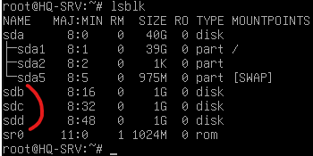
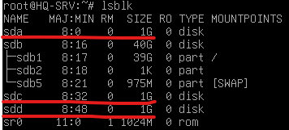
Далее необходимо создать массив дисков:
Далее нам необходимо обновить конфигурацию системы по массиву:
Далее необходимо отформатировать полученную структуру:
Создаем точку монтирования и подключаем:
Далее необходимо добавить строку в файл /etc/fstab, для автоматической сборки RAID после перезагрузки:
Для проверки подключения выполните перезагрузку, а потом df -h.
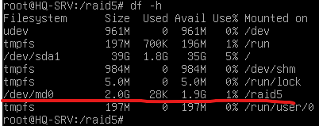
Развёртывание NFS
Далее нам необходимо развернуть NFS
создаем отдельную директорию.
Теперь необходимо отредактировать файл настроек NFS/etc/exports и добавить туда строку в нашу локальную сеть с HQ-CLI.
Далее нужно применить изменения:
Далее нужно перезапустить сервис NFS:
Далее переходим в HQ-CLI и устанавливаем пакет nfs-common:
Создаем папку для монтирования, что бы подключать туда папку:
Далее делаем подключение через /etc/fstab, добавляем строку:
Далее нам необходимо перезапустить виртуальную машину, так проще.
И выполнить команду вывода всех разделов и дисков df –h.
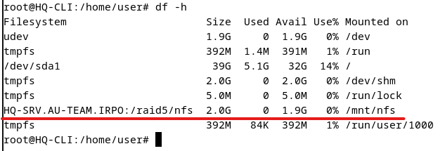
Настройка времени: Chrony / NTP
Chrony мы установим его на HQ-SRV.
/etc/chrony/chrony.conf
В конце файла добавить пару строк:
В Stratum указываете то число, которое стоит в задании.
Далее необходимо перезапустить chrony.
Пара проверок, что дата и время у вас совпадает с настоящей:
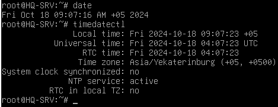
переходим на HQ-RTR, BR-RTR и выполняем команды для указания NTP сервера (HQ-SRV):
Далее для проверки выполняем команду show ntp status:
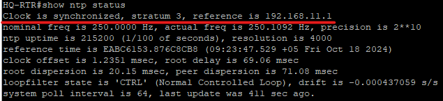
Далее выполняем настройку на BR-SRV, HQ-CLI.
Также устанавливаем пакет и заменяем сервер NTP на наш.
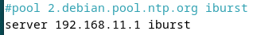
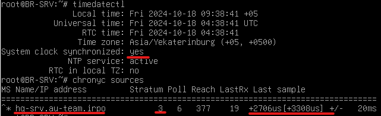
Проверяем на HQ-SRV все ли подключены:
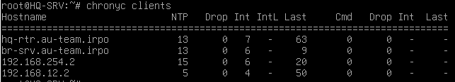
Первые 2 понятно кто такие, а вот последние давайте разберем.
192.168.254.2 – это BR-RTR, он воспользовался ip адресом GRE для подключения, но он у нас не добавлен в DNS, поэтому просто ip адрес.
192.168.12.2 – это у нас HQ-CLI, мы не изменили его в DNS, когда он получил DHCP, поэтому нам нужно поменять ip в DNS, это файл au-team.irpo и 12.168.192.
Немного отвлечемся и установим Яндекс Браузер на HQ-CLI.
Нажимаем скачать deb пакет.
Переходим в терминал и выполняем команды:
Контроллер домена Samba (AD)
Далее создадим доменный контроллер на базе Samba на машине BR-SRV.
Для дальнейшей настройки нужно изменить файл /etc/hosts:
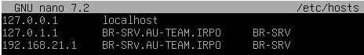
Далее переходим в BR-SRV и устанавливаем пакеты:
ПРИ УСТАНОВКЕ НЕОБХОДИМО БУДЕТ ВВЕСТИ ДАННЫЕ.
Указываем по порядку:
В 3 окне ничего не указываем.
Далее нам необходимо выполнить выключение сервисов и их маскировку:
После этого удаляем стандартный файл samba /etc/samba/smb.conf.
И выполняем команду создания домена:
Далее необходимо ввести поля для домена, вводим:
Если у вас не совпадают данные в квадратных скобках, то нужно их написать, а не просто нажать Enter;
Далее нам необходимо перезапустить сервис samba-ad-dc.
Далее мы переходим к настройке HQ-CLI, чтобы добавить его в домен.
Переходим к установке пакетов:
У нас снова появится псевдонастройка в которой мы тоже самое должны ввести, как на BR-SRV.
Далее мы переносим файл, на всякий случай:
И составляем файл:
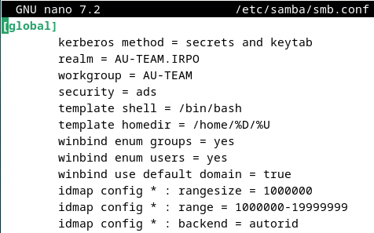
Далее смотрим, что бы файл был без ошибок через команду:
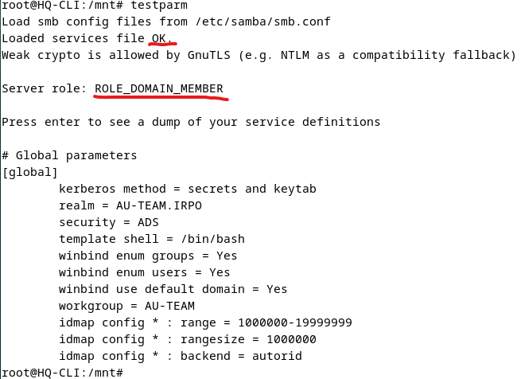
Далее нам необходимо поменять DNS на DC сервер в HQ-CLI:
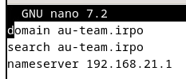
Далее выполняем команду добавления HQ-CLI в домен:
Пример нормального добавления:
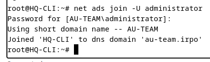
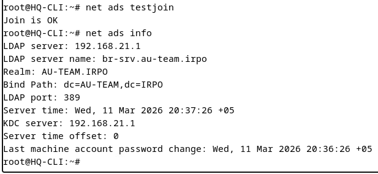
Далее перезапускаем winbind для загрузки новых доменных пользователей:
Проверяем:
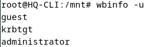
Пробуем зайти под доменного пользователя администратор:
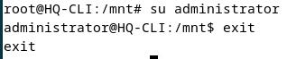
Отлично, работает!!!!!!!
Далее по заданию нам необходимо создать группу HQ и создать в ней 5 пользователей. Но для начала давайте создадим нам пользователя администратора:
Далее создаем группу:
Далее необходимо добавить пользователей в эту группу:
И так 5 раз с разными цифрами.
Далее обратно возвращаемся к нашему HQ-CLI и заходим в файл /etc/sudoers.d/hq, добавляем пару строк правил:
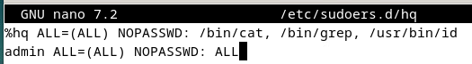
И пробуем зайти на пользователя user1.hq и выполнить неразрешенное действие, а потом разрешенное:
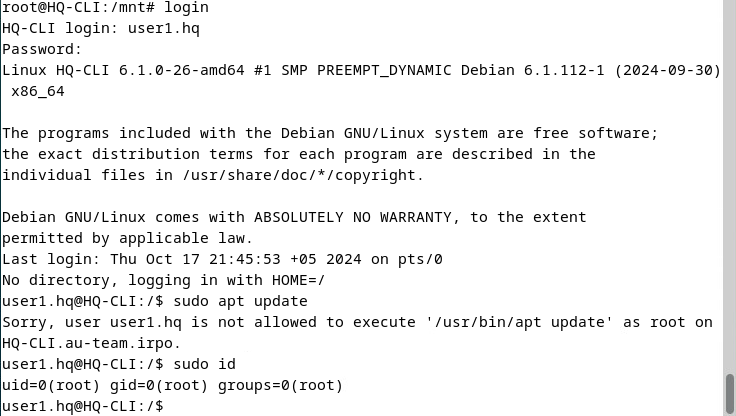
Проброс портов (NAT) на HQ-RTR и BR-RTR
Далее нам необходимо выполнить несложную работу, это проброс портов на маршрутизаторах HQ-RTR, BR-RTR.
В общей сложности нам необходимо пробросить 3 порта:
80 в 8080 на BR-SRV через BR-RTR;
2024 на BR-SRV через BR-RTR;
2024 на HQ-SRV через HQ-RTR.
Давайте начнем с HQ-RTR для этого выполняем команду:
Переходим к BR-RTR, выполняем команды:
Далее для проверки переходим на виртуальную машину CLI.
Нам необходимо проверить доступность прокинутых портов, но в данный момент мы сможем проверить только SSH, это порт 2024, который мы прокидывали на HQ-SRV, BR-SRV.
Переходим на CLI и в терминале пишем команды:
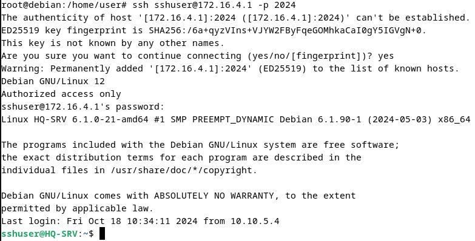
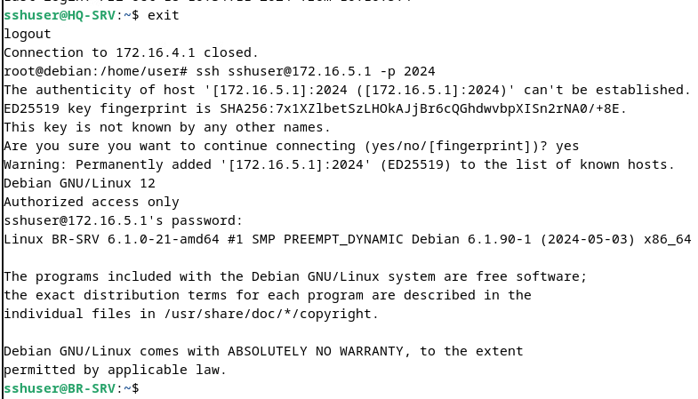
Только не забываем, что необходимо отключиться от первого сервера обратно на CLI, а потом уже 2-й раз подключаться.
Установка и настройка Ansible
Далее мы установим ansible на BR-SRV.
Для этого нам необходимо подготовить устройства. Необходимо настроить SSH на HQ-RTR, BR-RTR.
Необходимо выполнить команды:
Далее мы делаем установку на BR-SRV.
Устанавливаем пакет:
Далее необходимо сгенерировать ключ для подключения и установить для необходимых устройств:
Далее нам необходимо добавить в файл разрешение на подключение к старым протоколам на HQ-RTR, BR-RTR, заходим в файл /etc/ssh/ssh_config.
И добавить в конец файла строки:
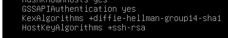
Далее нам необходимо залогиниться 1 раз на HQ-RTR, BR-RTR для создания отпечатка подключения:
Далее нам необходимо сделать рабочую директорию для ansible:
Нам необходимо составить список устройств:
Далее необходимо выполнить проверку ping до устройств, которые мы добавили, выполняем команду ansible all –m ping:
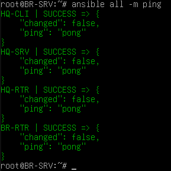
Отлично все работает без предупреждений.
ПЕРЕД установкой нужно прописать на BR-RTR и HQ-RTR на локальные интерфейсы ip tcp adjust-mss 1452
Установка Moodle
Далее мы займемся установкой moodle на вириальную машину HQ-SRV.
Для этого нам необходимо как всегда установить необходимые пакеты:
Далее нам необходимо настроить базу данных для использования moodle.
Далее нам необходимо скачать сам moodle, а также распаковать его:
Далее необходимо создать папку moodledata для хранения пользователей и курсов, а также выдать права для пользователя www-data на эту папку:
Также добавим адрес в DNS на HQ-SRV в прямую зону и обратную:
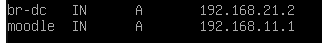
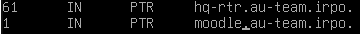
Nano /etc/php/8.2/apache2/php.ini расскомментируем и меняем
max_input_vars = 5000
Перезагрузите сервер HQ-SRV.
Отлично, далее нам необходимо зайти на сайт moodle и донастроить его, так как такие системы имеют настройку на сайте.
Для этого переходим на HQ-CLI, заходим в браузер и переходим по адресу сервера http://HQ-SRV.AU-TEAM.IRPO/moodle.
У нас появится окно установки:
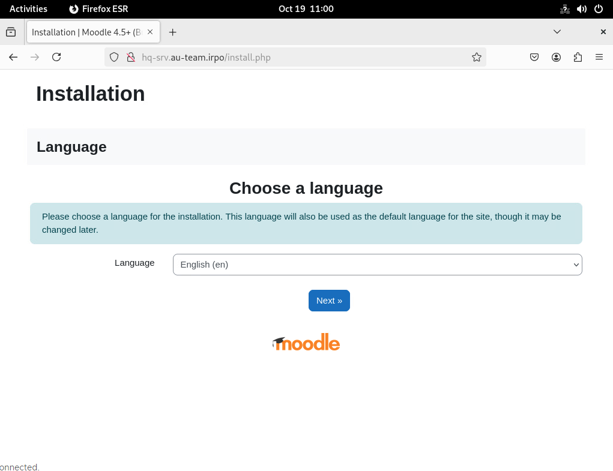
Далее нам необходимо выбрать базу данных, выбираем MariaDB.
И далее нам необходимо указать данные для подключения к базе данных.
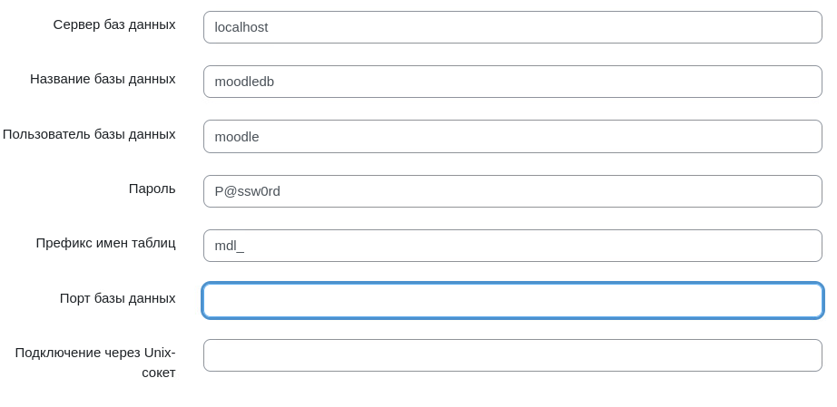
У нас должно быть всего 1 предупреждение, то что мы не используем https для moodle.
Далее переходим к настройке основной информации о сервере и стандартного admin пользователя. Заполняем данные, не забываем, что пароль должен быть «P@ssw0rd». Также заполните почту, например, «asd@local.ru».
Тыкаем продолжить и у нас появляются поля, которые необходимо заполнить.
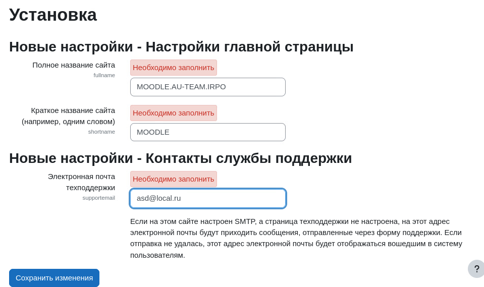
Готово, мы должны попасть на страницу moodle в «Личный кабинет».
Далее нам осталось только добавить сообщение на главную страницу, что у вас рабочее место с каким номером, для этого мы переключаемся в режим редактирования, кнопка сверху справа. И переходим в раздел «В начало».
У вас будет похожий вид страницы:
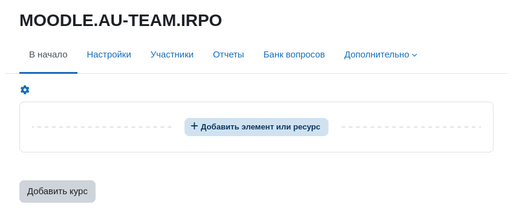
Далее мы нажимаем на «Добавить элемент или ресурс».
Выбираем «Текст и медиа» и вписываем в «Название в оглавлении курса» строку «Workplace number 1», номер отличается рабочим местом пользователя.
Далее делаем выход из пользователя и попадаем на страницу Home, где видим наше сообщение, все готово.
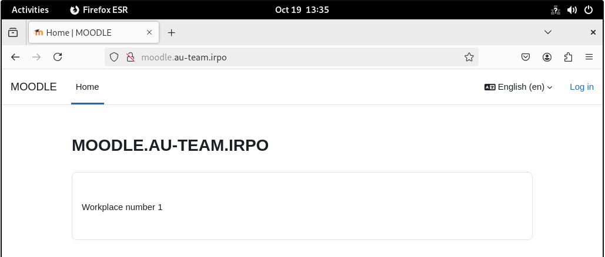
Далее мы опять выполним настройку на маршрутизаторах HQ-RTR, BR-RTR, которые будут обеспечивать работу протоколов http, https, dns, ntp, icmp.
Для этого необходимо выполнить команды на HQ-RTR:
Для этого необходимо выполнить команды на BR-RTR:
Отлично, далее для доступности сервисов из вне, там необходимо использовать глобальный DNS, но так как у нас к нему доступа нет, мы не покупали адреса, нам необходимо воспользоваться локальным решением.
Для того, чтобы web сервисы работали которые мы прокинули, нам необходимо изменить файл /etc/hosts. А также на CLI необходимо установить chrony.
С chrony делаем все тоже самое, сервер указываем внешний адрес маршрутизатора HQ-RTR. (server = 172.16.4.1)
В файл hosts необходимо добавить 2 строки:
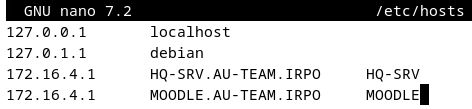
Теперь вы можете воспользоваться локальным сайтом из интернета.
Переходим на сайт http://moodle.au-team.irpo/moodle.
Все отлично открывается, хорошо!
Установка и настройка Zabbix
Мы будем устанавливать zabbix, на HQ-SRV.
Для этого нам необходимо выполнить некоторое количество действий:
Скачивание пакетов:
Далее необходимо выполнить настройку базы данных для zabbix:
Далее нам необходимо выполнить импорт схем из файла:
Далее нам предлагают ввести пароль, вводим пароль от zabbix пользователя.
Далее опять необходимо изменить настройки mysql:
В файле /etc/zabbix/zabbix_server.conf, находим строку #DBPassword= и изменяем на пароль zabbix пользователя;
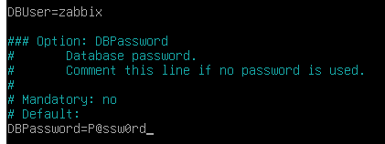
Перезагружаем сервер HQ-SRV.
Отлично, теперь переходим на сайт с помощью HQ-CLI.
И следуем установке. Указываем пароль для базы данных.
В настройках указываем:
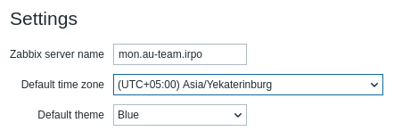
Отлично, добавим адрес в DNS для мониторинга.
И переходим по новому адресу http://mon.au-team.irpo/zabbix
Проверьте, что zabbix у вас включается автоматически:
Для настройки сетевого оборудования необходимо внести изменения в конфигурацию HQ-RTR, BR-RTR:
Далее необходимо настроить BR-SRV, а именно установить пакет zabbix-agent и настроить его на нужный сервер.
Выполняем команды, в необходимой строке изменяем данные:
Далее перезапускаем zabbix-agent:
Переходим на сайт http://mon.au-team.irpo/zabbix, через HQ-CLI.
Далее переходим в «Data collection», «Hosts».
Необходимо нажать на кнопку «Create host». Она находится вверху справа.
Заполняем необходимые данные:
Host name – Имя, назовем как есть.
Templates – Автоматические метрики, будем назначать необходимые.
Host groups – Объединение устройств, добавим все в 1 группу.
Interfaces – через, что будем мониторить, SNMP для RTR, zabbix-agent для SRV, а также ip адрес устройства.
Также нам необходимо будет определить на RTR устройствах SNMP_COMMUNITU. Это то слово, которое мы писали в команде (au-team).
Более ничего не понадобится пока, что.
Далее я приведу примеры настроек HQ-RTR, BR-RTR, BR-SRV.
HQ-RTR
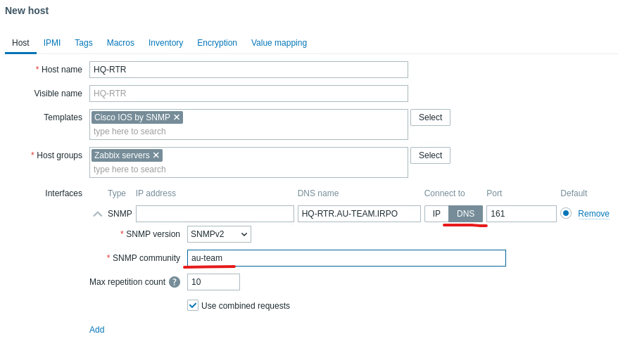
BR-RTR тоже самое, но другой ip, для ускорения можно зайти в созданный HQ-RTR и клонировать его.
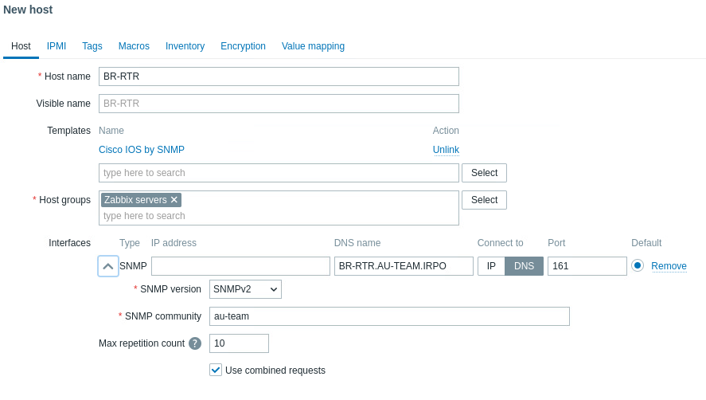
BR-SRV
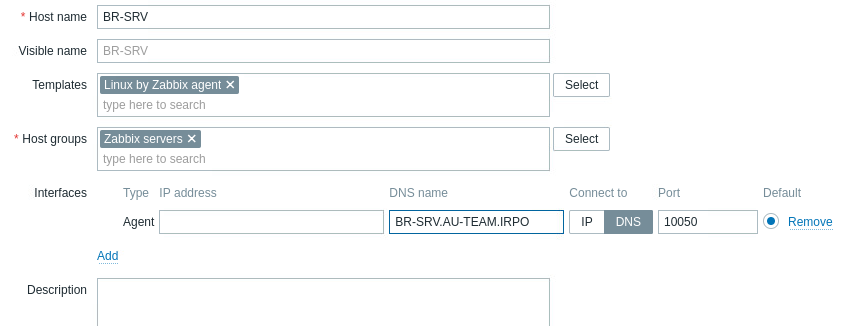
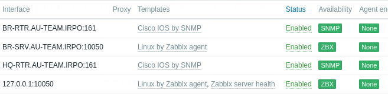
Далее необходимо переименовать устройство zabbix-server в HQ-SRV.
Открываем нажимая на имя и меняем Host Name на HQ-SRV.
Далее проверяем, данные которые мы получаем.
Переходим на страницу «Monitoring» «Latest Data».
И выбираем «Host groups» «Apply».
И получаем снизу вывод всех устройств, а именно:
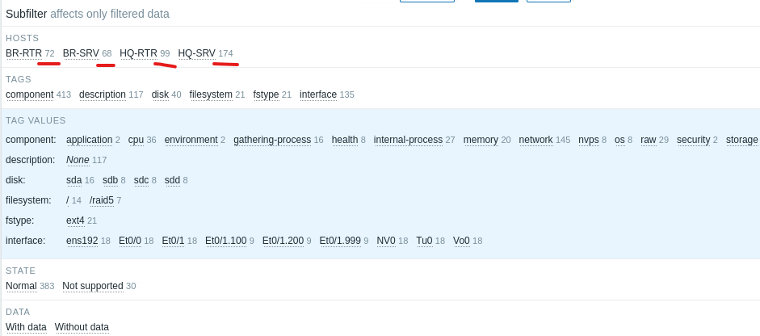
Далее нам необходимо изменить логин пароль для входа в zabbix.
Для этого переходим в вкладку «Users» «Users».
Открываем пользователя Admin и нажимаем на кнопку «Change password».
Вводим данные:
Current password: zabbix
Password: P@ssw0rd1
Password (once again): P@ssw0rd1
Для начала давайте изменим настройки существующего виджета про CPU HQ-SRV. Зайдем в него нажав на шестеренку в правом верхнем углу виджета.
Изменим имя на «Top hosts by CPU SRV», а также добавим в Hosts новый сервер, а именно BR-SRV и подтверждаем изменения.
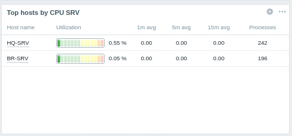
Пока, что так, далее мы его еще изменим.
Далее нам необходимо сделать такой же виджет, но для RTR, так как у них называется данные по-другому для вывода.
Выполняем копирование виджета и вставляем его ниже (3 точки возле шестеренки, копировать, нажимаем на пустое место, вставить виджет).
Изменяем виджет, на RTR вид. Изменимимя «Top hosts by CPU RTR».
Удаляем все Columns в виджете:
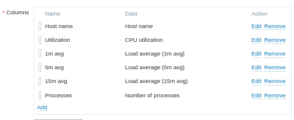
Далее нам необходимо добавить новые столбцы, нажимаем «Add».
У нас появляется поле настроек столбца, указываем по примеру:
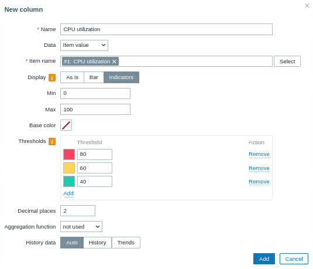
Item name – выбирается через select, там выбираете RTR устройство и самое первое идет, это название данных.
Далее нам необходимо настроить использование оперативной памяти.
Снова добавляем столбец и заполняем:
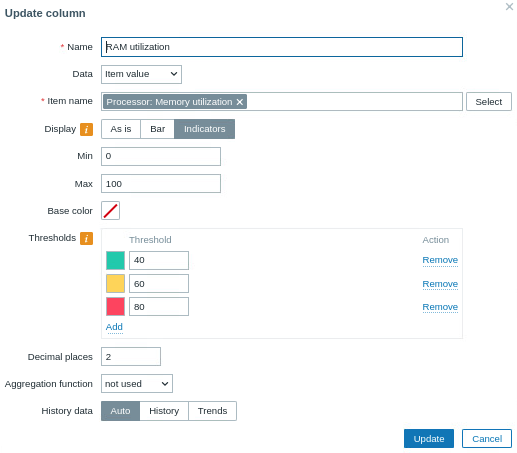
Далее на замену мониторинга основного накопителя, мы будем мониторить скорость выхода в интернет, для этого добавляем еще 1 столбец, тут проще настройка.
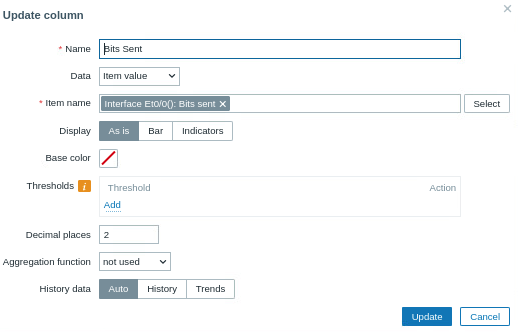
На осталось добавить по такому же принципу мониторинг оперативной памяти и основного накопителя.
Что бы не захламлять в SRV колонки давайте удалим 1m avg, 5m avg, Processes.
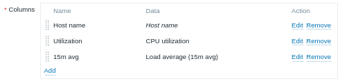
Далее добавим 2 столбца.
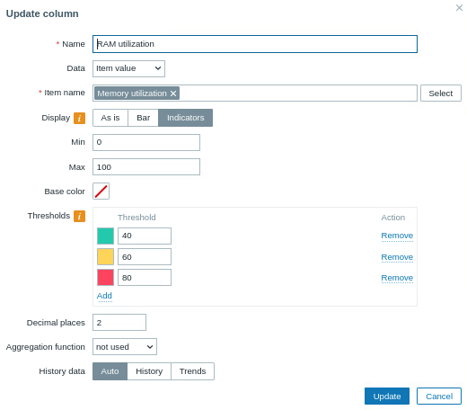
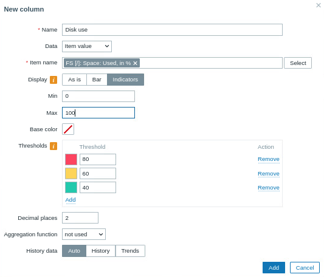
Нам необходим мониторить только основной накопитель, Raid мы не будем мониторить, также изменим названия нашим колонкам немного.
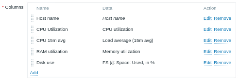
Подтверждаем.
Разместим более удобно.
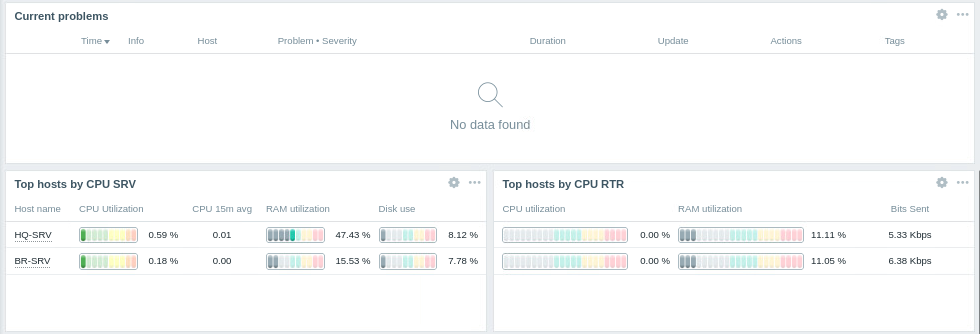
Готово, не забудьте сохранить изменения.
Принт-сервер CUPS
Далее нам необходимо настроить принт-сервер CUPS на HQ-SRV.
Для начала давайте установим пакет как обычно.
Далее нам необходимо добавить текущего пользователя (root) в группу управления принтерами.
Далее нам необходимо «рашарить» CUPS, для этого мы изменяем настройки в файле /etc/cups/cupsd.conf, там необходимо найти строку Listen localhost:631 и изменить ее на Port 631.
Далее находим раздел <Location /> и изменяем его:
Далее перезапускаем CUPS:
Далее запустим установку виртуального PDF принтера.
После установки CUPS автоматически добавит виртуальный принтер.
Далее будут огромные лаги, не пугайтесь.
Далее необходимо внести изменения в локальный CUPS на HQ-CLI он уже установлен. Необходимо создать файл «/etc/cups/client.conf».
И добавить туда строку «ServerName 192.168.11.1».
Перезапускаем CUPS.
Теперь, нам необходимо зайти на сервер HQ-SRV CUPS. И создать новый принтер на основе PDF принтера и подключить его к HQ-CLI.
Переходим по адресу https://192.168.11.1:631.
Сразу переходим в вкладку Printers и тыкаем на PDF. Далее необходимо нажать на открывающийся список в администрировании и выбрать модифицировать принтер.
Далее вас переведет на страницу настройки этого принтера, далее необходимо выбирать настройки по примеру:
Мы должны получить сообщение, что принтер модифицирован.
Далее необходимо немного настроить HQ-CLI, переходим в настройки устройства, в вкладку Printers и видим наш принтер, который уже был добавлен.
Пример:
Далее нажимаем на шестеренку и делаем его по умолчанию если не сделан.
Далее переходим в Printing Options и нажимаем кнопку Test Page.
Также пробуем запустить печать любого файла через terminal на HQ-CLI.
Пример:
Далее мы проверим, как все напечаталось.
Переходим на сервер CUPS опять и заходим на страницу принтеров.
Переходим в принтер PDF. Нажимаем кнопку Show All Jobs.
Видим все наши задачи на печать.
Далее переходим на сервер HQ-SRV и переходи в папку /home/user/PDF.
У нас должны лежать файлы или файл, смотря сколько раз нажимали на тестовую печать и печатали, но от user пользователя на HQ-CLI.
Готово.
Docker и MediaWiki (BR-SRV)
«Развертывание приложений в Docker на сервере BR-SRV».
Пока устанавливается, давайте добавим DNS запись про wiki.
Далее нам необходимо создать файл для реализации стека контейнеров, а также связать их по средствам статического ip, так как мы далее будем настраивать доступ на сервер базы данных.
И запускаем нашу чудо шарманку:
Далее переходим на HQ-CLI и переходим на сайт http://wiki.au-team.irpo:8080 и мы попадаем на непонятную страницу где говорится, что не найден файл LocalSettings.php и что его необходимо сконфигурировать, тыкаем.
Доходим до настройки базы данных:
Пароль: WikiP@ssw0rd (как указывали в wiki.yml)
Далее настраиваем пользователя и имя wiki.
Логин - wiki
Пароль - WikiP@ssw0rd
В конце необходимо выбрать «I’m bored already, just install the wiki».
Продолжаем до конца и в конце у нас скачивается файл LocalSettings.php.
Далее нам необходимо перенести файл настроек с HQ-CLI на BR-SRV.
Переходим в terminal и выполняем команды:
Переходим в BR-SRV и выполняем команды:
Далее необходимо изменить файл wiki.yml и расскомментировать 2 строки:
Далее осталось перезапустить контейнеры и проверить работоспособность.
Выполняем команды:
Переходим в HQ-CLI и обновляем сайт, мы должны попасть на уже запущенную версию MediaWiki.